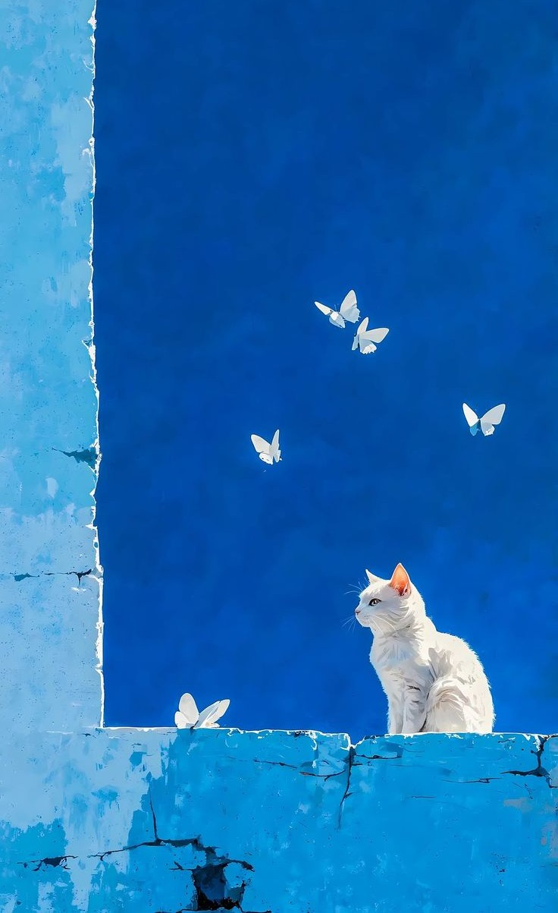
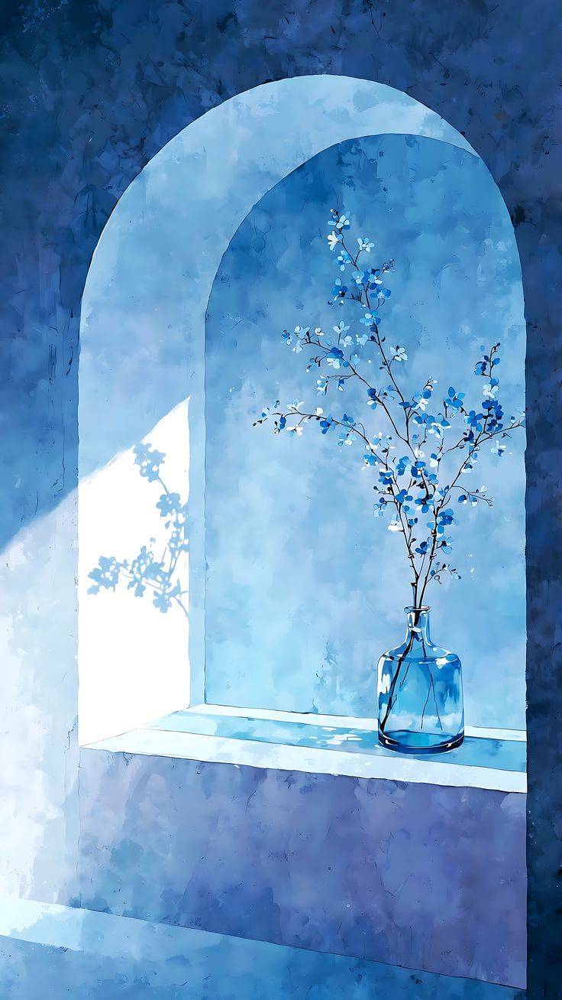
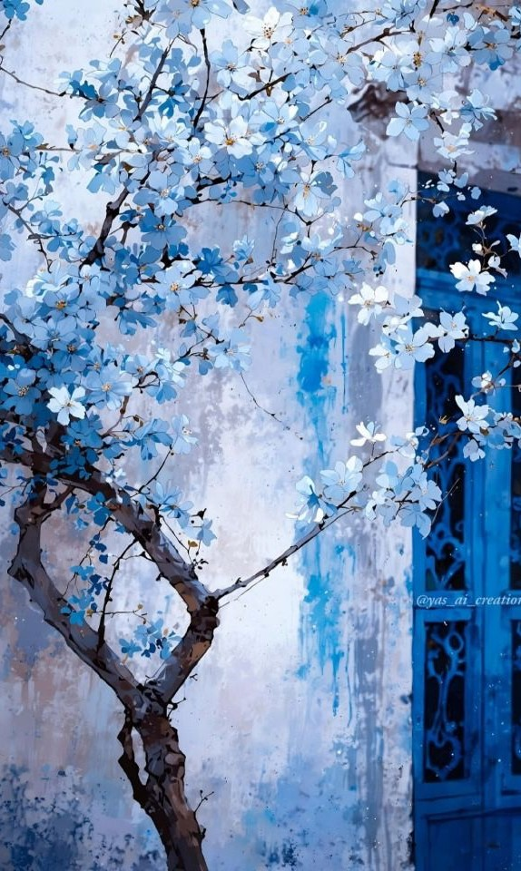
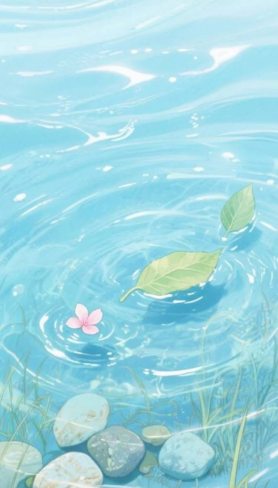

1. Cool colors include:
- Blue
- Purple
- Green
- Turquoise
2. Personality of someone who likes cool colors:
- Calm and peaceful: They enjoy quiet moments and tend to stay relaxed in stressful situations.
- Thoughtful and reflective: Often deep thinkers, they like to observe and analyze before acting.
- Introverted or reserved: They may prefer small groups or alone time over big crowds.
- Balanced and steady: Cool color lovers often seek harmony and avoid drama.
- Creative in a quiet way: Their creativity shows in subtle, elegant, or meaningful ways.